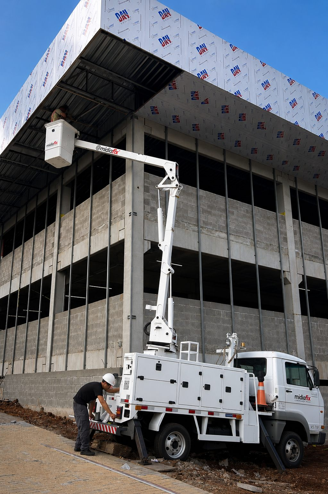
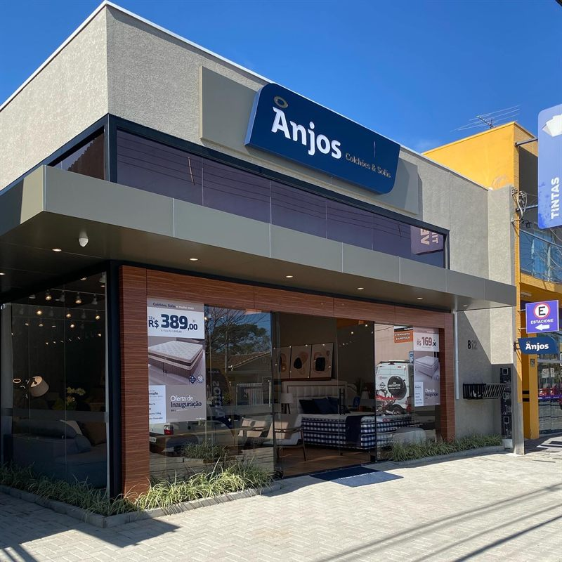

Projetos completos de fachada comercial para redes, franquias, supermercados e corporações — do projeto técnico à entrega, com padrão de execução supervisionado em cada etapa.
Sem compromisso · Resposta em até 48h
Atendemos empresas que não podem errar na execução — porque a fachada é o primeiro ponto de contato com o cliente.
Fachadas de grande escala com produção padronizada e instalação técnica para pontos de alto tráfego.
Padronização visual entre unidades com fidelidade ao manual de marca — independentemente da quantidade de pontos.
Projetos que comunicam saúde, confiança e organização antes de o paciente entrar.
Sinalização e fachada com materiais especificados para ambientes regulados e de alta exigência técnica.
Identidade visual corporativa aplicada com consistência em unidades distribuídas geograficamente.
Fachada e sinalização para galpões e plantas industriais com durabilidade para alta exposição externa.
Comunicação visual de obra, identificação de empreendimentos e sinalização de vendas com padrão corporativo.
Projetos que equilibram identidade de marca com comunicação funcional para ambientes de grande fluxo.
Não encontrou o seu setor? Atendemos qualquer empresa que exija padrão, prazo e responsabilidade técnica.
Clientes formam opinião em segundos. Uma fachada ruim não perde uma venda — ela impede que a venda comece.
A avaliação que o cliente faz começa na calçada. Material deteriorado e identidade inconsistente comunicam descuido — e o mercado transfere essa leitura para a qualidade do produto e do atendimento.
Cada unidade que abre com padrão visual diferente da anterior é um investimento em marca que não se acumula. O cliente que encontra duas identidades distintas na mesma rede não soma — questiona.
O orçamento mais barato quase sempre cobre só a produção. Instalação, logística e retrabalho entram depois. O projeto que parecia 30% mais barato chega ao final com custo equivalente — e qualidade inferior.
A MIDIAFIX assume a gestão técnica integral de cada projeto. Do briefing ao parafuso final, nossa equipe coordena e supervisiona cada etapa — com produção própria e rede de execução técnica supervisionada quando necessário.

A proposta mais inteligente não é a mais barata — é a que entrega o resultado exigido com a especificação técnica mais eficiente disponível para aquele projeto. Antes de produzir qualquer peça, nossa equipe técnica analisa o escopo, o ambiente, o material e o processo — e identifica onde é possível otimizar sem comprometer o padrão visual contratado.
Essa inteligência de especificação é o que permitiu reduzir em 40% o custo do projeto Muffatão sem alterar o resultado entregue. Não foi coincidência. Foi método aplicado antes de assinar a ordem de produção.
Projetos reais, para empresas reais — com escopo definido, prazo cumprido e padrão entregue.

Franquia · Rede de LojasRede franqueada com padrão visual rígido. Necessidade de execução fiel ao manual de marca sem margem para interpretação — qualquer desvio implicava penalidade contratual para o franqueado.
Fachada comercial completa com materiais especificados pelo manual, incluindo revestimento, letras e comunicação visual de ponto de venda. Cada elemento passou por validação técnica antes da produção.
O projeto de fachada do Muffatão começou com um orçamento que não fechava. Terminou com 40% de redução de custo — sem abrir mão de um milímetro do resultado visual exigido.
O desafio
O Muffatão precisava de uma fachada à altura de um dos supermercados mais reconhecidos da região. O projeto original chegou com custo que inviabilizava a execução dentro do orçamento sem comprometer o padrão visual definido.
A adaptação técnica
Nossa equipe identificou oportunidades de respecificação de materiais e racionalização de processo sem impacto no resultado visual percebido. A adaptação foi apresentada com justificativa técnica completa e aprovada pelo cliente antes da produção.
O resultado: a fachada entregue seguiu o padrão visual original em sua totalidade. O custo foi 40% menor. O prazo foi cumprido. Não houve retrabalho. Isso não foi sorte de projeto — foi método.
Analisamos o escopo, o material e o processo — e apresentamos a proposta mais eficiente para o seu resultado.
A escolha do material e da técnica depende do ambiente, da durabilidade exigida e do padrão da sua marca. Veja como especificamos cada situação.
Revestimento em ACM com sistema de identidade padronizado.
O ACM oferece durabilidade, facilidade de reposição e alta fidelidade de cor entre produções distintas — crítico para redes que abrem novas unidades ao longo do tempo.
Fachada mista — ACM + letras caixa iluminadas ou letreiro luminoso.
A combinação entrega o melhor dos dois recursos: identidade e proteção estrutural via ACM, presença visual após o pôr do sol via iluminação interna.
Respecificação técnica + revestimento parcial + identidade visual atualizada.
Trocar tudo nem sempre é necessário. A atualização dos elementos principais de comunicação frequentemente entrega resultado equivalente a uma reforma completa por uma fração do custo.
Sinalização técnica com materiais especificados para o ambiente — resistência química, não-porosidade, durabilidade em ambientes úmidos.
Especificar material errado em hospitais, laboratórios ou indústrias não é só desperdício — pode gerar não-conformidade com normas ABNT e vigilância sanitária.
Execução por especificação técnica — fidelidade total ao padrão definido.
Quando o manual define Pantone, material, dimensão e posicionamento, o papel do fornecedor é executar com precisão cirúrgica. Temos processo de validação técnica antes da produção que garante aprovação na primeira vistoria.
Fazemos o diagnóstico técnico antes de qualquer recomendação. Sem viés de produto — só especificação correta para o seu caso.
A MIDIAFIX não diversificou para crescer. Especializou. Cada número abaixo é resultado dessa escolha.
Material certo no projeto errado é desperdício. Material errado no projeto certo é retrabalho. A especificação técnica — a escolha do material adequado para o ambiente, a durabilidade exigida e o resultado visual contratado — é a variável que mais impacta o desempenho de longo prazo de uma fachada comercial.
A MIDIAFIX especifica por projeto, não por catálogo. Antes de recomendar qualquer material, analisamos o ambiente de instalação, a exposição a intempéries, o padrão de cor exigido e o ciclo de vida esperado. Para projetos que exigem materiais com rastreabilidade técnica e garantia de fabricante, trabalhamos com fornecedores certificados — isso é tratado como especificação técnica, não como argumento de venda.
Não é azar. É ausência de método. Cada situação abaixo tem uma causa específica — e uma forma de evitar antes de assinar qualquer proposta.
O fornecedor cotou a peça — não o projeto. Instalação, logística e ajustes entram depois da assinatura, um por um.
Proposta técnica fechada com escopo completo: produção, logística, instalação e eventuais adaptações identificadas no briefing. Nenhum custo surpresa depois de aprovado.
A produção foi terceirizada. O terceiro atrasou. O fornecedor não tinha como pressionar — e o cliente ficou sem fachada na semana da inauguração.
Cronograma integrado entre produção e instalação, gerenciado e acompanhado pela MIDIAFIX. O prazo que combinamos é o prazo que supervisionamos — com rastreabilidade de cada etapa.
A arte foi aprovada em tela. O material chegou com tom diferente. A escala estava errada. Ninguém validou em material real antes de produzir.
Validação técnica de arte antes da produção — com verificação de cor em material físico, conferência de escala e aprovação formal de cada elemento antes de qualquer corte.
Cada unidade foi atendida por um fornecedor local diferente. Cada um interpretou o manual de marca do seu jeito.
Especificação técnica de marca fechada e aplicada igualmente em todas as unidades. Um fornecedor, um padrão, uma entrega — independentemente de onde estão.
O fornecedor especificou material por preço, não por durabilidade e ambiente. Quando o problema apareceu, não havia como contestar — nenhuma especificação foi formalizada.
Especificação técnica documentada antes da produção — material definido por ambiente, exposição e ciclo de vida esperado. O que foi especificado é o que foi produzido, com rastreabilidade.
O instalador foi contratado separado do produtor. Não recebeu o briefing completo. Quando o problema apareceu, produtor e instalador se apontaram mutuamente.
Briefing técnico único compartilhado entre produção e instalação — independentemente de quem está em campo. A MIDIAFIX é o único responsável pelo resultado. Existe um projeto, um padrão, uma entrega.
Fazemos um diagnóstico técnico do seu projeto antes de qualquer proposta — identificamos os riscos e apresentamos como mitigamos cada um.
Cada etapa tem responsável, entregável e prazo definido. Você sabe o que esperar — e quando esperar.
Entendemos o projeto, o ambiente físico, as exigências da sua marca e as restrições da obra. Nenhuma proposta é elaborada sem esse diagnóstico — porque proposta sem diagnóstico é chute, não projeto.
Especificamos materiais, técnica de instalação, prazo de execução e investimento total — sem itens em aberto. A proposta que você recebe é a proposta que você paga. Não existe "custo adicional a definir".
Criamos o projeto visual respeitando a identidade da sua marca. A aprovação é feita item a item, com validação técnica de cor e escala em material físico antes da produção.
Produção com inspeção de qualidade em cada peça antes de sair para a obra — seja em parque próprio ou em parceiro homologado pela MIDIAFIX. O que foi aprovado em arte é o que vai instalado.
Equipe de instalação — própria ou parceira técnica orientada pela MIDIAFIX — com briefing completo e cronograma integrado. A instalação começa quando a produção confirma que está tudo certo — não antes.
Documentação fotográfica completa, relatório de conclusão e protocolo de garantia. Você tem registro formal do que foi entregue — e sabe exatamente com quem falar se precisar de manutenção.
Diagnóstico técnico sem custo · Proposta em até 48h · Sem compromisso
Respondemos as dúvidas mais estratégicas — sem evasão comercial.
Diagnóstico técnico sem custo. Proposta fechada em até 48 horas. Sem compromisso.
A MIDIAFIX atende empresas que não podem errar na execução. Se o seu projeto exige prazo real, padrão verificável e um parceiro que responde pelo resultado do início ao fim — este é o lugar certo.
Sem custo · Resposta em até 48h · Proposta técnica fechada